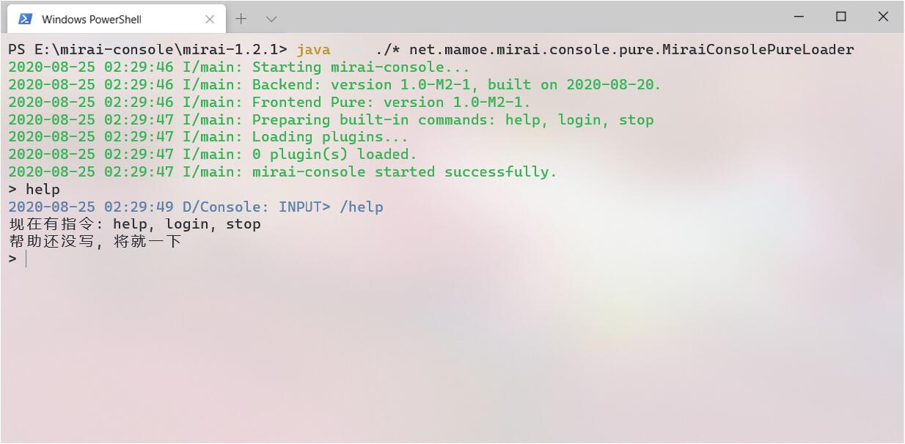
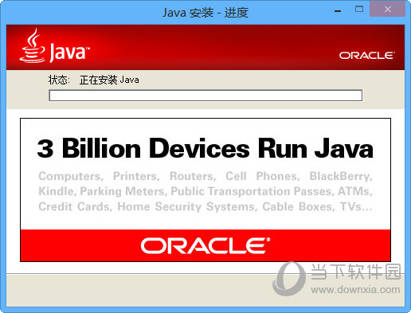
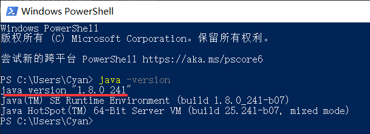
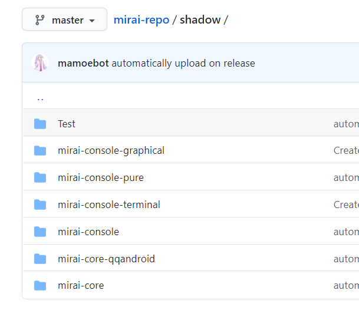
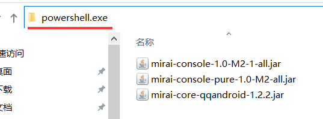
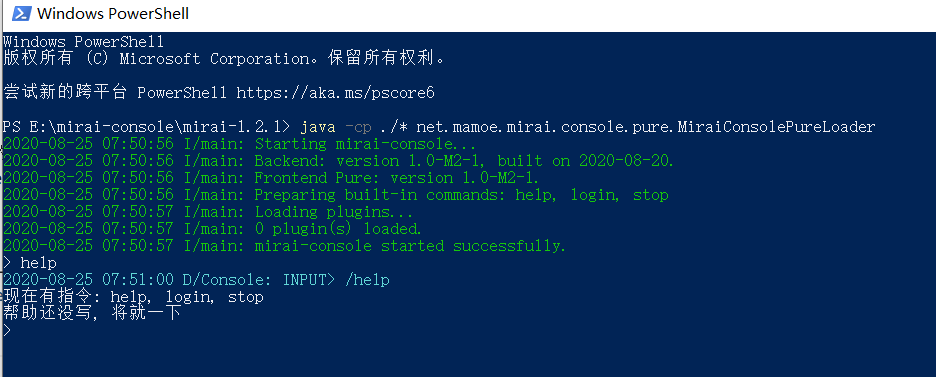
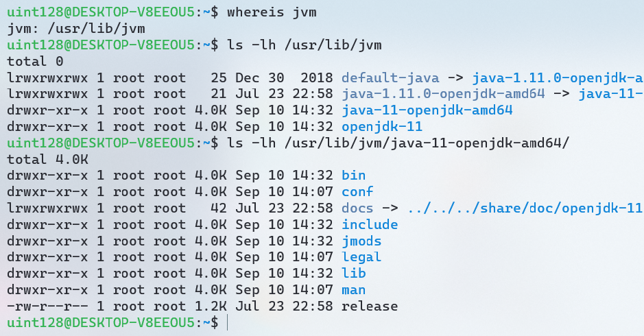

开源Android QQ协议库mirai使用教程(2020-08版本)
简单的入门教程, 适合无基础小白。因水平有限，本文内容可能会有错误，还请指正。
前言
其实之前已经写过一篇类似的mirai使用教程。
但是mirai（以及相关作品）经过几个版本的迭代，已经有了较大的变化，旧文章中的许多内容已经不再适用，故有了这篇新的文章。
mirai 项目简介
mirai与mirai-console
Mirai 是一个在全平台下运行, 提供 QQ Android 和 TIM PC 协议支持的高效率机器人框架(官方定义)。实际上因为一些原因, TIM PC 协议停止更新了。目前功能最齐全, 运行最稳定的是 QQ Android 协议。(mirai 项目地址: Github )
Mirai 是由 Kotlin 语言编写的协议库, 提供使用 QQ Android 协议的一些 API。但是 mirai 本身不是一个 “QQ机器人” 程序, 而是一个库。与机器人软件/框架 (例如酷Q) 对应的应该是 mirai 官方的衍生项目 mirai-console。(mirai-console 项目地址: Github )

mirai-console 提供了插件系统, 支持安装 由 Java/Kotlin 编写的 mirai-console 插件。如果安装了 mirai-native 插件, 还可以支持酷Q的插件。由于酷Q插件相关的机制没有开放，因此无法直接加载cpk类型的插件, 需要将酷Q的插件重新编译为 dll 才能给 mirai-native 使用。( mirai-native 项目地址: Github )。安装 mirai-api-http 插件, 则可以使用基于 mirai-api-http 开发的插件。( mirai-api-http 项目地址: Github )
开始使用 mirai-console
使用前的注意事项
下面是使用之前必须阅读的声明(源自mirai的README.md)：
一切开发旨在学习，请勿用于非法用途
- mirai 是完全免费且开放源代码的软件，仅供学习和娱乐用途使用
- mirai 不会通过任何方式强制收取费用，或对使用者提出物质条件
- mirai 由整个开源社区维护，并不是属于某个个体的作品，所有贡献者都享有其作品的著作权。
Mirai 在各个平台均没有任何所谓官方交流群或论坛, 请不要轻信任何所谓学习, 交流群, 不造谣不传谣不信谣从我做起
如果你是开发者，你还需要了解 mirai 的开源协议。mirai 采用 AGPLv3协议开源。按照这个协议，任何与 mirai 有直接或间接关系的程序，都应该采用相同的协议开源。比如，开发基于 mirai-console 的插件会直接引用 mirai 相关的库，因此这个插件需要采用 AGPLv3 协议开源。此外，开发基于 mirai-api-http 的插件会间接使用到 mirai，因此这个插件也需要采用 AGPLv3 协议开源。
在 windows 上使用 mirai-console
准备运行环境
运行 mirai-console 需要安装 Java 运行环境。安装 jre1.8 (或 jdk8) 以及更高版本都可以。(jre1.8 安装包下载地址: baidu ; jdk8安装包下载地址: baidu )

安装完成后, 重启计算机。打开 Powershell, 输入 java -version 或者 java --version 然后回车, 查看是否正确安装 Java。正确安装 Java 并执行上面的指令后, 其结果应该如 图 3 所示。
打开 Powershell 的方法: 同时按下键盘上的 Win 按键 (印着 windows 图标的按键) 和 字母 R 按键, 这会启动 “运行” 程序。输入
powershell然后点击确定, 就可以打开 Powershell。

下载 mirai-console
mirai-console 包含两个部分：前端和后端。后端是 mirai-console 的核心部分，包含插件系统、指令系统、配置系统等。前端则是和后端进行交互的部分。比如在控制台中进行交互，可以使用 Pure 前端；需要图形界面的交互可以使用 Graphical 前端；Unix 终端界面可以使用 Terminal 前端。
mirai-console 前端和后端可以在 mirai-repo 中下载。
mirai-console 的后端位于 mirai-console 文件夹内。mirai-console 的 Pure 前端位于 mirai-console-pure 文件夹下。(图 4)
下载 mirai-core-qqandroid
mirai-core-qqandroid 位于 mirai-repo 的 mirai-core-qqandroid 文件夹下，它是 mirai 的核心组件，mirai-console 需要它才能正常工作。(图 4)

运行 mirai-console
将 mirai-console 的前端、后端以及 mirai-core-qqandroid 共三个文件放在同一个目录下。在资源管理器的地址栏中输入 powershell.exe 然后回车, 这会在当前目录启动 Powershell。(如 图 5)

启动 Powershell 后, 输入以下指令并回车启动 mirai-console。(图 6)
1 | java -cp ./* net.mamoe.mirai.console.pure.MiraiConsolePureLoader |

在 Linux 上使用 mirai-console
以下内容在 WSL 中进行，以 Debian 10 为例。
准备运行环境
执行以下命令安装个 openjdk 就好了：
1 | sudo apt-get update |
下载 mirai-console 与 mirai-core
可以用 curl 或者 wget，也可以在windows系统下载好之后用 scp 指令传输到 Linux。
运行 mirai-console
执行以下指令启动 mirai-console。
1 | java -cp ./* net.mamoe.mirai.console.pure.MiraiConsolePureLoader |
如果出现 Error: Could not find or load main class 的错误，尝试以下解决方法：
首先找到 /usr/lib/jvm/java-XXX-openjdk-amd64/ 目录的路径
可以执行以下指令寻找：
1 | whereis jvm |
如图所示，在我的 Linux 上，该目录的路径是 /usr/lib/jvm/java-11-openjdk-amd64/

然后，根据你自己的情况，修改并执行以下指令，启动mirai。
1 | java -cp /usr/lib/jvm/java-11-openjdk-amd64/lib:./* net.mamoe.mirai.console.pure.MiraiConsolePureLoader |
让 mirai 在服务器中持续运行
断开 ssh 链接时，会把在会话期间运行的程序一起结束掉。要让 mirai-console 和其他插件在服务器中持续运行，推荐使用 screen 程序。
下面以启动 mirai-console 为例简单介绍 screen 的用法。
执行以下指令安装 screen：
1 | sudo apt-get install screen |
创建一个屏幕（SCREEN_NAME是屏幕的名称，可以改成合适的名字）：
1 | screen -S SCREEN_NAME |
然后在新创建的屏幕启动 mirai-console。
要断开屏幕连接，先按下组合键 Ctrl+A 再按下字母 D。
之后再关闭终端，就不会把 mirai-console 结束掉了。
要重新连接之前的屏幕，执行以下指令：
1 | screen -r SCREEN_NAME |
如果忘记了有哪些屏幕，可以执行以下指令列出所有屏幕：
1 | screen -ls |
插件推荐：mirai-native 与 mirai-api-http
mirai-native 插件提供了和酷Q类似的插件API，如果有dll版本的酷Q插件，可以直接使用（cpk文件不行），该插件只能用于 windows，java x86 环境。
mirai-api-http 插件提供了一系列HTTP API，其他语言可以很方便地使用HTTP API使用mirai。现在已经有很多基于HTTP API的SDK，因此即使不擅长 kotlin/java 语言也可以开发 mirai 机器人。
// 未完待续…
开源Android QQ协议库mirai使用教程(2020-08版本)
https://uint128.com/2020/08/25/开源Android-QQ协议库mirai使用教程-2020-08版本/